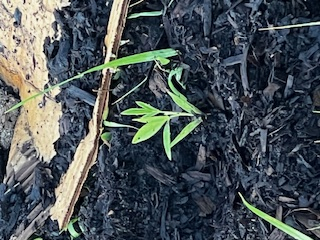

Optional Preparation: Soak pea seeds overnight or scratch lightly with
sandpaper. Ideally, plant in late Spring for an October-November harvest,
although they may be planted pretty much anytime.
Step 1. Sow dried pigeon pea seed directly to soil outdoors about 3/4-1
inch deep approximately 3-4 feet between rows and 2 feet (at least)
between plants. Plants closer together will not grow as large as those
with more space, so if smaller row plants are desired, plant closer
together.
Step 2. Water seed lightly until sprout appears. Do not overwater.
Step 3. Continue to water lightly every other day until plant is
approximately 12 inches tall.
Step 4. Water every few days after this as they are very drought-tolerant.
